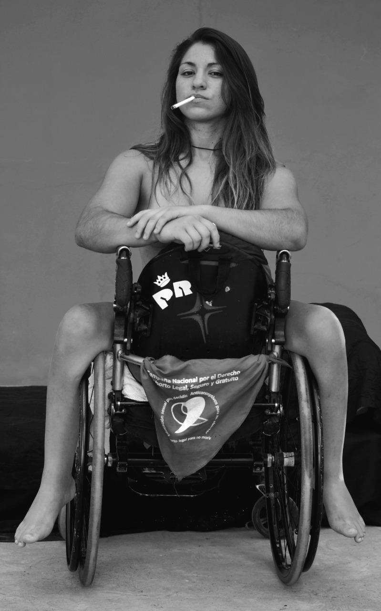
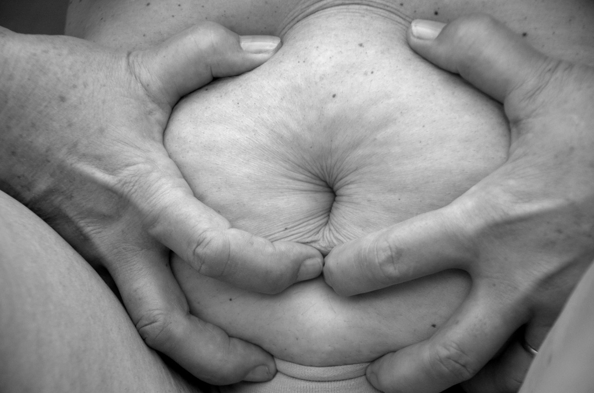
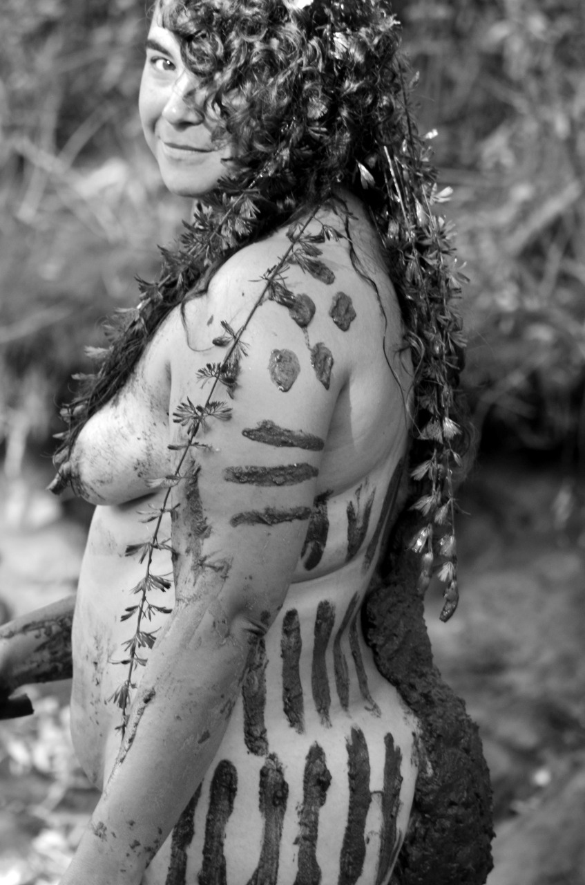
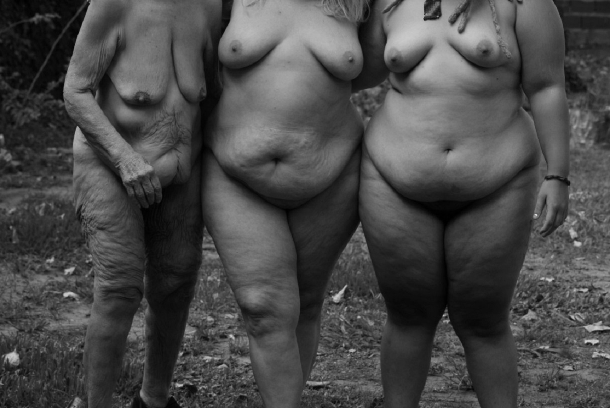
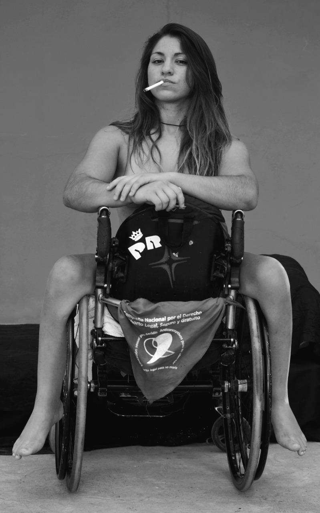
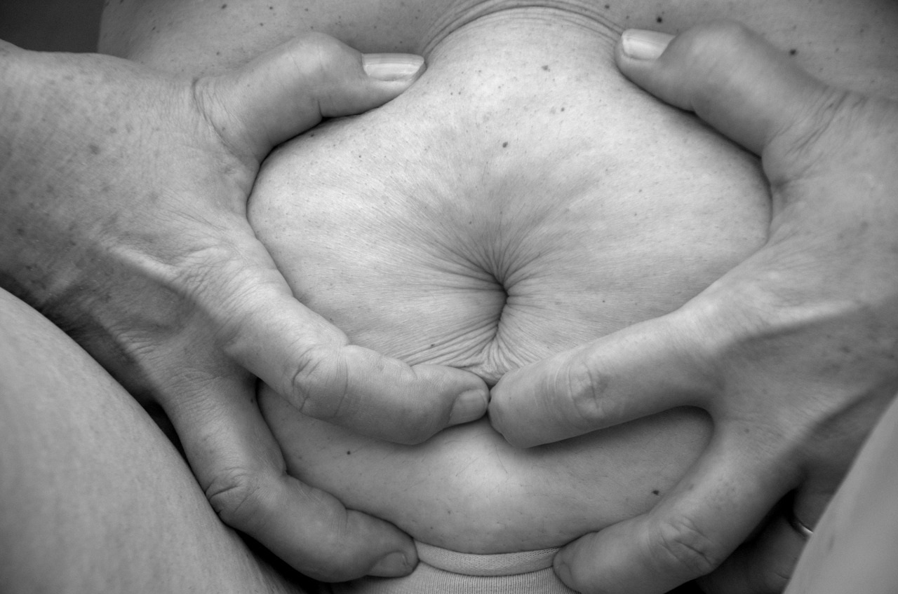
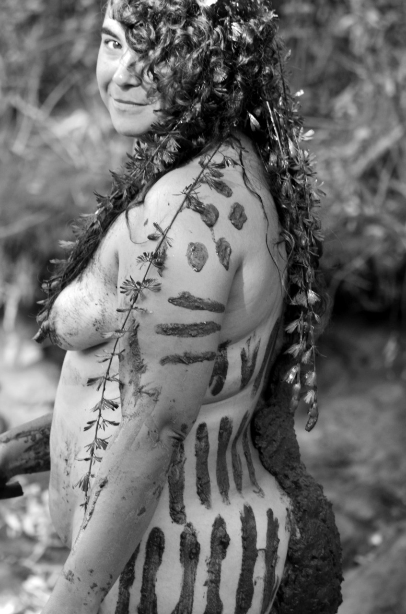
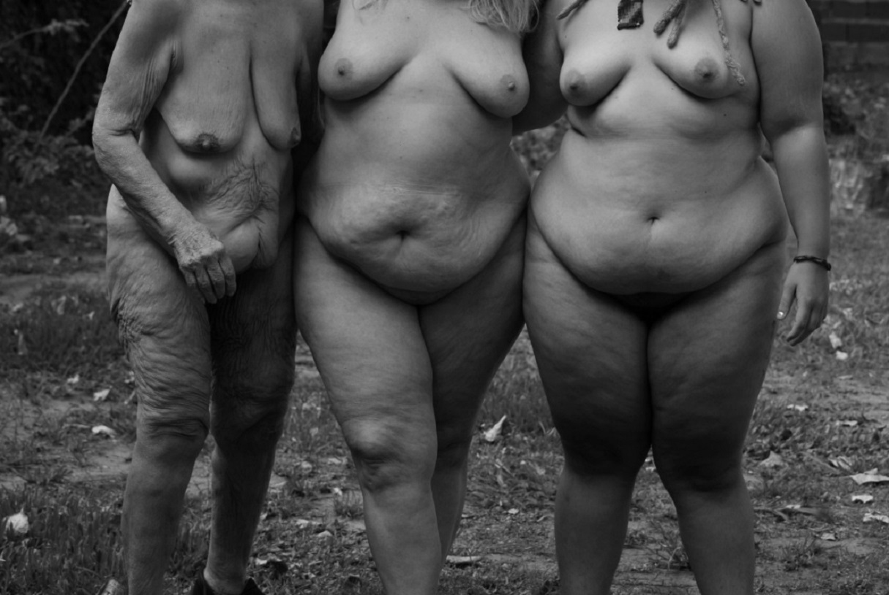

Mi Cuerpo Mi Territorio
Prólogo escrito por Fernando Álvar Núñez
“Mi cuerpo, mi territorio” es el nombre de una muestra de fotografías que se inscribe en la intersección de múltiples luchas colectivas. Su autora Karen Espada es mujer, feminista, obesa, originaria y enfermera. Su trabajo profundiza una búsqueda en mujeres con corporalidades disidentes, mujeres cuyos cuerpos parecen necesitar el tratamiento amoroso y reparador que Karen puede darles desde el lente de su cámara.
Convocar a sus modelos fue un trabajo largo, lento y constante que requirió mucho diálogo y mucha escucha, un trabajo previo antes de la sesión de fotos en el que mucho antes de la intimidad de la imagen, debió surgir la intimidad de las historias. Karen se ofrece a sus modelos, no pide una pose, piensa las ideas junto con ellas, planea, diseña, siempre a partir de la historia.
En sus fotos hablan las modelos tanto como la autora. A comienzos del 2020 la autora expuso en el encuentro de las mujeres en territorio zapatista, en México. Su muestra fotográfica ha sido expuesta en centros culturales de su ciudad, pero también ha viajado en forma digital para ser apreciada en otros países. Tras la primera muestra de su trabajo, en el 2019 estas mujeres comenzaron a conocerse entre sí conformando lentamente un colectivo informal, que se reúne en el jardín de la casa de la autora en Los Hornos, para intercambiar ideas, compartir historias, festejar, bailar, planear y realizar largas sesiones de fotografía. Espada refiere que en estas reuniones todas las mujeres participan espontáneamente: asisten sosteniendo una tela, o una luz, o una pantalla, pero también aportando ideas, maquillando, escribiendo el cuerpo de la mujer que va a ser fotografiada, proponiendo o incluso corrigiendo. Escriben textos, testimonios, poesías o frases sueltas. Algunas fotos se intervienen posteriormente ya sea en formato digital o en el papel y en este proceso también hay participación de las mujeres. La autora no sacrifica los deseos y necesidades de expresión ante ninguna regla de estilo o unidad conceptual. La temática cuerpos disidentes y la mirada reparadora es lo único que da unidad a su trabajo, por lo demás, hay fotos blanco y negro, en color, intervenidas, no intervenidas, espontáneas, o con mucha preproducción.
En este trabajo colectivo los límites entre los roles se confunden, se comparten, se multiplican: artista, modelo, curador, público. Karen tiene claro su trabajo, pero no encaja en las estructuras rígidas de lo institucional, no es fácil de definir. La obra es la foto, o mejor dicho el conjunto de las fotos, pero también la sesión tiene características de obra. Su trabajo resulta terapéutico tanto para ella como para las participantes e incluso para el público, pero ninguna de estas personas ven este proceso como un taller terapéutico o algo parecido. Los encuentros presenciales se dan entre imágenes que en otros contextos podrían verse como terribles, son habitualmente en un clima de fiesta, de liberación y de sensualidad. Tanto en las sesiones como en las muestras los participantes expresan sus diferentes interpretaciones en voz alta. El concepto de obra abierta se hace presente, sin ser nombrado.
Las obras no exhiben o exponen los problemas-sociales, políticos en una forma obvia, pedagógica, la autora no cree que pueda iluminar o esclarecer a nadie, no es una idea que pase por su mente. La obra no solo está condicionada por lo social, también construyen lo social, ayuda a modelar, a configurar lo social.
 






